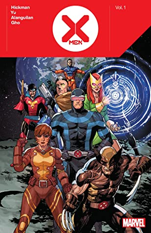

5: Lastman

Ratings : 🌟 3.9/5
Author : Bastien Vives, Balak
Genre :ActionAdventure
Year Published : 2013
No. of issues : 12
Brief:
Lastman is a French comics series written by Bastien Vivès and Balak and drawn by Bastien Vivès and Michaël Sanlaville. It has been published since March 2013 by Casterman in the collection KSTЯ.[1] In 2016, an adult animation telling the genesis of the main character started being aired on the public French TV channel France 4.
In the "Valley of Kings", a world where magic is acknowledged as reality, an annual grand tournament sponsored by the King and Queen is being prepared. Young Adrian Velba works all year in the combat school of Master Jansen to participate. Sadly, Adrian's partner suddenly falls ill and deserts. Since it is a duo tournament, the young boy is forced to give up his dream... until Richard Aldana, a hunk with bearish manners comes out of nowhere to unexpectedly ally himself with Adrian.
4: X-Men
Ratings : 🌟 4.0/5
Author : Jonathan Hickman
Genre :AdventureActionSuper Power
Year Published : 2019-2020
No. of issues : 6
Brief:
The X-Men face a whole new world of possibility! Mastermind Jonathan Hickman and superstar artist Leinil Francis Yu kick off this uncanny new era with a celebration of family as Cyclops, Marvel Girl and their extended clan make a Summer House for themselves — on the moon! But when an island full of unspeakable horrors appears on the horizon, the X-Men have their work cut out for them keeping their new homeland of Krakoa safe! As Earth comes to terms with the X-Men’s new world order, the mutant nation’s leaders attend an economic forum to show the humans what real power looks like. Plus: A trip to the Savage Land, an old nemesis returns and Mystique goes to extraordinary lengths to get what she wants!
THE DAWN OF X BREAKS! The X-Men find themselves in a whole new world of possibility... and things have never been better! Jonathan Hickman (HOUSE OF X, POWERS OF X, SECRET WARS) and superstar artist Leinil Yu (NEW AVENGERS, CAPTAIN AMERICA) reveal the saga of Cyclops and his hand-picked squad of mutant powerhouses!
3: Invincible

Ratings : 🌟 4.0/5
Author : Robert Kirkman, Cory Walker
Genre :AdventureSuper PowerFantasy
Year Published : 2002
No. of issues : 12
Brief:
Mark Grayson is teenage superhero Invincible. He was a normal high school senior with a normal part-time job and otherwise normal life, except his father Nolan is the superhero Omni-Man, the most powerful superhero on the planet. At the age of 17, Mark begins to display superpowers, which come from his father being a member of the Viltrumite race, who, according to Nolan, pioneer the galaxy on a mission of benevolence and enlightenment. As Invincible, Mark begins working as a superhero, with his father acting as his mentor, and meeting other heroes. Mark worked occasionally with a superhero team called the Teen Team (consisting of Robot, Rex Plode, Dupli-Kate and Atom Eve), from there discovering that his Physics teacher has been turning his students into human bombs. He stops his teacher with the help of the heroine, Atom Eve. He also foils a plan to make an army of robots, created by the Mauler Twins. Meanwhile Omni-Man is kidnapped by aliens, taken to another dimension, but returns after what seems to be only a few days, but was actually eight months to him.
2: Watchmen

Ratings : 🌟 4.4/5
Author : Alan Moore
Genre :AdventureAction
Year Published : 1986
No. of issues : 12
Brief:
Watchmen is set in an alternate reality that closely mirrors the contemporary world of the 1980s. The primary difference is the presence of superheroes. The point of divergence occurs in the year 1938. Their existence in this version of the United States is shown to have dramatically affected and altered the outcomes of real-world events such as the Vietnam War and the presidency of Richard Nixon. In keeping with the realism of the series, although the costumed crimefighters of Watchmen are commonly called "superheroes", only one, named Doctor Manhattan, possesses any superhuman abilities. The war in Vietnam ends with an American victory in 1971 and Nixon is still president as of October 1985 upon the repeal of term limits and the Watergate scandal not coming to pass. The Soviet invasion of Afghanistan occurs approximately six years later than in real life.
When the story begins, the existence of Doctor Manhattan has given the U.S. a strategic advantage over the Soviet Union, which has dramatically increased Cold War tensions. Eventually, by 1977, superheroes grow unpopular among the police and the public, leading them to be outlawed with the passage of the Keene Act. While many of the heroes retired, Doctor Manhattan and another superhero, known as The Comedian, operate as government-sanctioned agents. Another named Rorschach continues to operate outside the law.
1: Batman: The Dark Knight Returns

Ratings : 🌟 4.3/5
Author : Frank Miller
Genre :AdventureActionCrimeThriller
Year Published : 1986
No. of issues : 6
Brief:
This masterpiece of modern comics storytelling brings to vivid life a dark world and an even darker man. Together with inker Klaus Janson and colorist Lynn Varley, writer/artist Frank Miller completely reinvents the legend of Batman in his saga of a near-future Gotham City gone to rot, ten years after the Dark Knight's retirement. Crime runs rampant in the streets, and the man who was Batman is still tortured by the memories of his parents' murders. As civil society crumbles around him, Bruce Wayne's long-suppressed vigilante side finally breaks free of its self-imposed shackles. The Dark Knight returns in a blaze of fury, taking on a whole new generation of criminals and matching their level of violence. He is soon joined by this generation's Robin—a girl named Carrie Kelley, who proves to be just as invaluable as her predecessors. But can Batman and Robin deal with the threat posed by their deadliest enemies, after years of incarceration have made them into perfect psychopaths? And more important, can anyone survive the coming fallout of an undeclared war between the superpowers—or a clash of what were once the world's greatest superheroes? Over fifteen years after its debut, Batman: The Dark Knight Returns remains an undisputed classic and one of the most influential stories ever told in the comics medium. Collecting Batman: The Dark Knight Returns